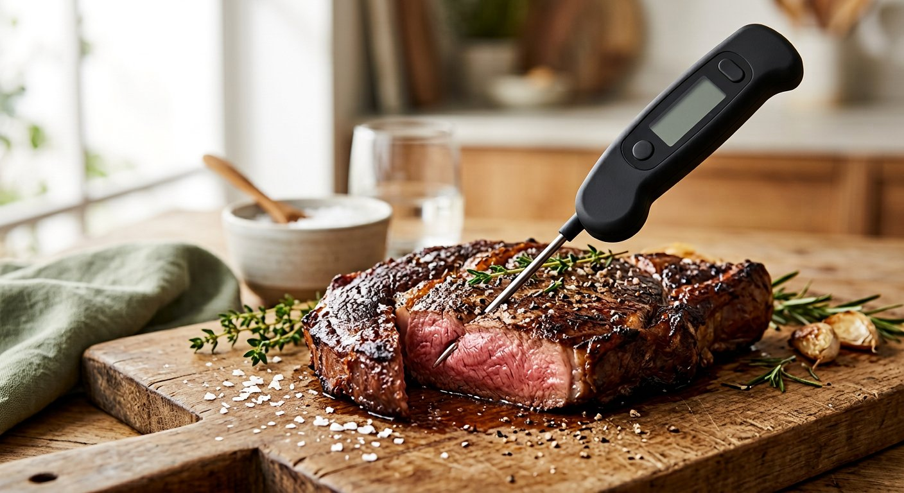

CHEFMAN 6 Qt Dual Basket Air Fryer
Two independent 3-qt baskets, viewing windows, Sync Finish so both sides land together, Hi-Fry option, 1700 W.
Price: see listing
Check price on Amazon ↗Source & statusEvery item below was matched to its official Amazon listing on 2026-11-20 by resolving the supplied source link and reading the listing page. Prices change constantly, so we send you to the listing for the current figure — never a stale number from us.
Basket and oven formats for weeknight cooking: two Chefman basket units and a French-door multi-function oven. Compare capacity, footprint, and cleanup with our format guides before picking a model.
Two independent 3-qt baskets, viewing windows, Sync Finish so both sides land together, Hi-Fry option, 1700 W.
Price: see listing
Check price on Amazon ↗Source & status26-quart French-door countertop oven with 24 one-touch preset options, six cooking accessories included, per the official listing.
Price: see listing
Check price on Amazon ↗Source & status8-quart basket, 4-in-1 (air fry, bake, reheat, cook from frozen), Hi-Fry button to 450 °F, dishwasher-safe nonstick basket, 1700 W.
Price: see listing
Check price on Amazon ↗Source & status
One foldable instant-read probe and one wireless three-probe system — the two very different ways to stop guessing at doneness. Our thermometer guide covers the questions that separate the formats.
1-second instant-read folding probe, auto-rotating LED screen, waterproof body; the listing states ±0.5 °F accuracy with NIST & NSF certification.
Price: see listing
Check price on Amazon ↗Source & statusThree ultra-thin wireless probes with a charging hub, WiFi monitoring, five sensors, rated to 1000 °F heat per the listing, managed in the CHEF iQ app.
Price: see listing
Check price on Amazon ↗Source & statusThree records, deliberately kept apart. Blank means not established from an authorized source — never zero, false, or a guess. Intent (what the owner meant to promote) is never merged with observation (what a supplied link did on a given day).
Per-product intent fields are filled in only by the account owner inside the enrolled Associates workflow. All five rows are currently blank and flagged — see FLG-001.
| Submitted link (project brief) | Intended ASIN | Intended official listing URL | Confirmation date | Confirmation source | Status |
|---|---|---|---|---|---|
| link.amazon/B04G1MEwY | Unverified · FLG-001 | ||||
| link.amazon/B02NbDxp3 | Unverified · FLG-001 | ||||
| link.amazon/B00hJ57DV | Unverified · FLG-001 | ||||
| link.amazon/B0c8moW59 | Unverified · FLG-001 | ||||
| link.amazon/B0f3GKalj | Unverified · FLG-001 |
Each supplied short link was fetched live on 2026-11-20 and the final Amazon listing it landed on was recorded. This is an observation of behaviour on that date, not proof of anyone's intent, and no public Amazon document binds a short code to a destination ASIN — see FLG-003.
| Submitted link | Observed redirect target | Observed on | Method | Official listing it landed on (source) | Category |
|---|---|---|---|---|---|
| B04G1MEwY | amazon.com/dp/B0CDY277D3 | 2026-11-20 | Live redirect resolution | CHEFMAN 6 Quart Dual Basket Air Fryer Oven with Easy View Windows… | Air Fryers |
| B02NbDxp3 | amazon.com/dp/B09B7SB46R | 2026-11-20 | Live redirect resolution | Emeril Lagasse 26QT French Door Multi-Function Air Fryer Toaster Oven… | Air Fryers |
| B00hJ57DV | amazon.com/dp/B08DKYBTPH | 2026-11-20 | Live redirect resolution | Chefman Air Fryer 8 Qt | TurboFry 4-in-1… | Air Fryers |
| B0c8moW59 | amazon.com/dp/B0DHZTCNR5 | 2026-11-20 | Live redirect resolution | ThermoMaven 1 Sec Professional Digital Meat Thermometer… | Meat thermometers |
| B0f3GKalj | amazon.com/dp/B0DZFD6R9Z | 2026-11-20 | Live redirect resolution | CHEF iQ Sense Smart Wireless Meat Thermometer | Gen3… | Meat thermometers |
Read line-by-line from each official listing on 2026-11-20. Price and rating columns are deliberately blank: they move daily and no dated, authorized capture exists for them — see FLG-004. Amazon defines an ASIN as a unique 10-character code (Amazon, Sell on Amazon); the submitted 9-character tokens are therefore recorded as tokens, not ASINs.
| Product | Brand | Model number | Observed ASIN | Price | Rating | Source |
|---|---|---|---|---|---|---|
| CHEFMAN 6 Quart Dual Basket Air Fryer Oven with Easy View Windows | Chefman | RJ38-SQPF-3TDB-2W | B0CDY277D3 | Official listing | ||
| Emeril Lagasse 26QT French Door Multi-Function Air Fryer Toaster Oven | Emeril Lagasse | 4-00675-02X-VN | B09B7SB46R | Official listing | ||
| Chefman Air Fryer 8 Qt | TurboFry 4-in-1 | Chefman | RJ38-SQSS-8T | B08DKYBTPH | Official listing | ||
| ThermoMaven 1 Sec Professional Digital Meat Thermometer | ThermoMaven | HT07 | B0DHZTCNR5 | Official listing | ||
| CHEF iQ Sense Smart Wireless Meat Thermometer, Gen3 | CHEF iQ | CQ60-3C-Z1-E | B0DZFD6R9Z | Official listing |
amazon.com/dp/<ASIN>?tag=shopnow047c-20, marked rel="sponsored nofollow", one per product. Destinations were confirmed live on 2026-11-20; whether the Associates report attributes clicks and orders to tag shopnow047c-20 still has to be confirmed in the enrolled workflow before we add more links — FLG-002. The supplied short links are not claimed to be invalid; their compliance status is simply unresolved — FLG-003.